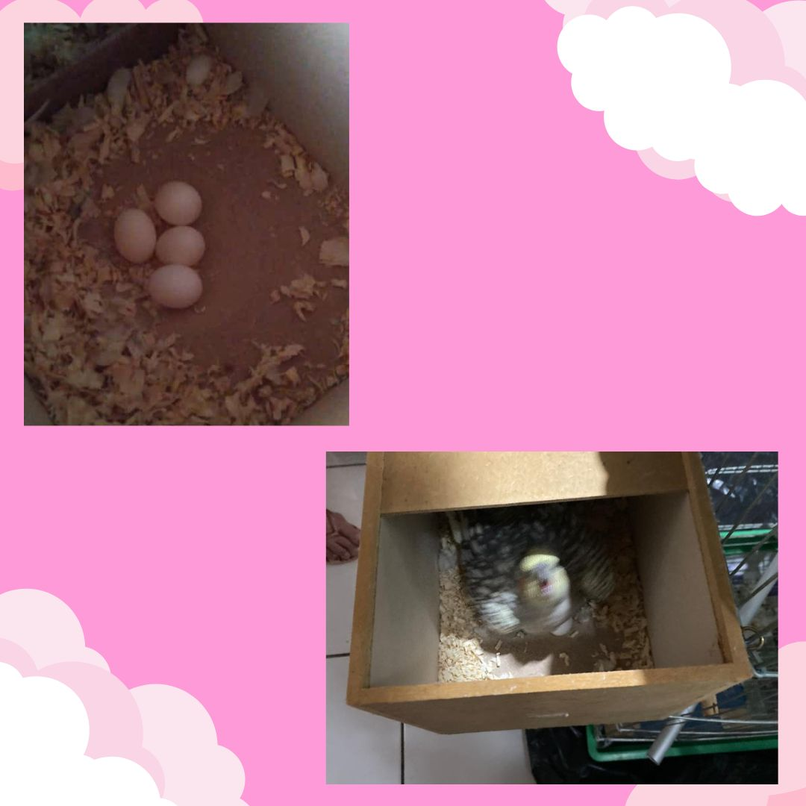

Animals curiosity
As calopsitas são animais curiosos por natureza, e com certeza são uma boa companhia. Elas são aves inteligentes, ágeis e sociáveis. A expectativa de vida delas é em torno de 10 a 15 anos e a alimentação delas é composta por sementes, e alguns tipos de frutas e vegetais.
Benefícios
- CONHECER MAIS SOBRE OS CUIDADOS DAS CALOPSITAS
- ALIMENTAÇÃO ADEQUADA
- PREVINIR DOENÇAS
- REPRODUÇÃO

PARA O SEU DIA A DIA O ACONSELHÁVEL SERIA A RAÇÃO,QUE DEVE CONTER SEMENTES DE GIRASSOL, ABÓBORA, LENTILHA, ALPISTE E ETC. MAS TAMBÉM DEVEMOS INCLUIR EM SUA ALIMENTAÇÃO FRUTAS, VERDURAS E LEGUMES. E SUA ÁGUA DEVE SER TROCADA TODOS OS DIAS
